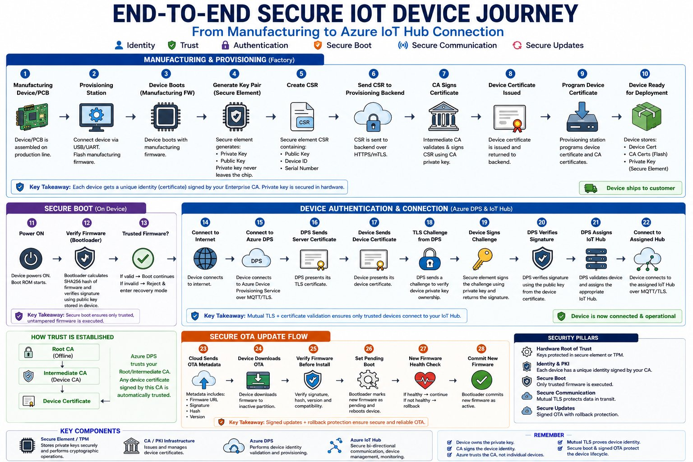

Long-form technical breakdowns on enterprise IoT, embedded security, PKI systems, and cloud integration.
A comprehensive guide to the complete enterprise IoT security lifecycle — from manufacturing to deployment at scale.
Most engineers start embedded development by writing drivers, blinking LEDs, or sending telemetry over UART. But enterprise IoT platforms operate at a completely different scale.
A modern Embedded Systems Architect is expected to design:
This article explains the complete enterprise-grade device lifecycle — from manufacturing to secure cloud connectivity.

The entire system is built on one foundational concept:
Devices must prove cryptographically that they are trusted before they can execute firmware or communicate with cloud services.
That trust is established using:
The lifecycle begins in the factory.
A new PCB is connected to a provisioning station via USB, UART, or SWD/JTAG. The provisioning station is typically an industrial Linux PC, automated manufacturing fixture, or factory programming tool.
The provisioning station installs initial firmware using tools like OpenOCD, STM32CubeProgrammer, J-Link, or pyOCD. This firmware contains secure provisioning logic, key generation routines, and manufacturing diagnostics.
The firmware communicates with a secure element (ATECC608, TPM 2.0, EdgeLock SE050, etc.). The secure element generates a private/public key pair entirely on-chip.
Critical security rule: The private key NEVER leaves the secure element — not during manufacturing, provisioning, or operation.
The secure element creates a CSR containing the public key, device serial number, and subject name (e.g., CN=device-1001.company.com). The CSR never contains the private key. It is sent to the provisioning backend over HTTPS/mTLS.
A Certificate Authority (CA) is a trusted entity that signs device certificates — think of it as a cryptographic passport authority operating at fleet scale.
Using an intermediate CA limits the blast radius if a signing key is compromised — the root CA remains untouched and a new intermediate CA can be provisioned.
The provisioning station calls an enterprise provisioning API which validates factory authorization, serial number validity, and production batch approval before the CA signs the CSR. The resulting X.509 certificate is returned to the device.
The device is now cryptographically trusted by your enterprise.
Before cloud connectivity, the device must trust its own firmware. The secure boot chain works in three stages:
This creates an unbroken cryptographic chain of trust from silicon to application layer.
Once installed at the customer site, the device powers on, acquires a network connection, and initiates a connection to Azure Device Provisioning Service (DPS) over MQTT/TLS.
Why mutual TLS matters: It simultaneously proves device identity to the cloud AND cloud identity to the device — eliminating man-in-the-middle attacks, rogue devices, and rogue servers in one handshake.
After authentication, DPS validates the enrollment group, applies provisioning policies, assigns the device to the correct IoT Hub instance (by region, tier, or business unit), and returns the Hub hostname. The device connects to its assigned Hub over MQTT/TLS and is now fully operational.
Firmware updates are one of the highest-risk operations in IoT systems. A poorly designed OTA mechanism can brick millions of devices or introduce malware at scale.
Certificates expire. At fleet scale — thousands or millions of devices — manual renewal is operationally impossible.
SCEP (Simple Certificate Enrollment Protocol) automates certificate issuance, renewal, and rotation. Devices detect approaching expiry, generate a new CSR, and request a renewed certificate from enterprise PKI infrastructure — all without human intervention.
Without automated lifecycle management: fleets fail en masse when certs expire, and manual reprovisioning becomes impossible at scale. This is one of the most common enterprise IoT failure modes.
Leads to device cloning and full identity theft. Always use a secure element or TPM.
Causes mass outages when certificates expire. Implement automated SCEP renewal.
Allows malware injection across the entire fleet. Every firmware must be signed.
Attackers can install older vulnerable firmware. Enforce monotonic version counters.
JTAG/SWD left enabled in production. Lock debug interfaces before deployment.
Using the same certificate or key on multiple devices destroys individual accountability and traceability.
Strong IoT architects optimize simultaneously across security, memory footprint, reliability, scalability, provisioning complexity, and operational maintainability. The goal is not merely "connecting devices" — it is building trusted, auditable, maintainable systems that operate reliably at fleet scale over multi-year product lifetimes.
Enterprise IoT systems are fundamentally trust systems. Every layer — manufacturing, firmware, provisioning, networking, OTA, cloud onboarding — must participate in establishing and maintaining cryptographic trust.
The future of embedded systems is no longer isolated firmware engineering. It is end-to-end secure distributed systems architecture. And that is where modern Embedded Systems Architects create the most impact.